De chica mi diversión favorita era pasear por el campo mirando flores y bichos con
curiosidad.
Luego de un largo camino (carrera universitaria, hijos, periodismo
especializado) me doy cuenta que juego a lo mismo: ahora con una cámara de fotos
y conocimientos que antes no tenía.
En un principio fotografiar nació por necesidad de ilustrar y aportar claridad a mis
notas. No fue sencillo, aunque las fotos muy pronto se publicaron; recién después
de cursos y horas de vuelo salieron casi como quería.
Mi intención es que mis tomas instantáneas sean fotos testimoniales que descubran
las secretas líneas de la naturaleza, sus casi invisibles detalles...un instante mágico
de luz.
Hay que aclarar -para hacer honor a los colores y formas reales-que las fotos
naturales, no tienen más retoque que el necesario para ampliarlas. Por una cuestión
de gusto personal, las compongo al sacarlas.
En algún momento, a manera de distención, comencé a manipular digitalmente las
imágenes: me gustó el resultado, pero ese es otro tema.
Las transformadas podrían ser imágenes oníricas de las instantáneas. Encontradas
a través de transmutaciones, me impactaron por
lo vitales, melancólicas o tenebrosas. Son pura sensación.
